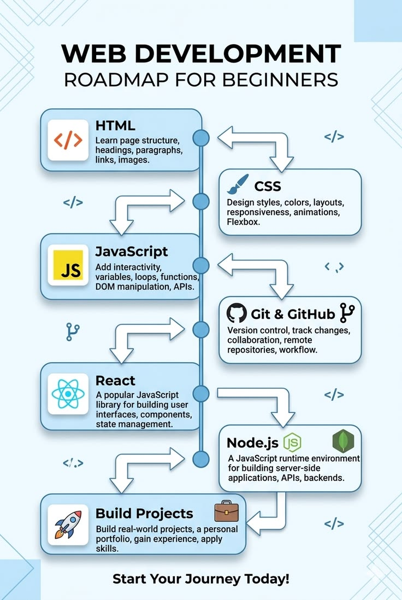

O audio acima referente à videoaula da Univesp - Universidade Virtual do Estado de São Paulo- apresenta
uma revisão histórica do nascimento da WWW e como ela se estrutura atualmente, tanto do ponto de vista de protocolos, quanto de tecnologias para o backend e para o frontend.
Semântica HTML
O vídeo apresenta algumas das principais tags semânticas do html5. Canal: Manual dev, Plataforma: YouTube.
Ferramentas web

O banner acima mostra algumas das principais ferramentas da Programação Web.